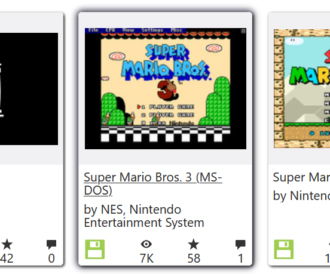
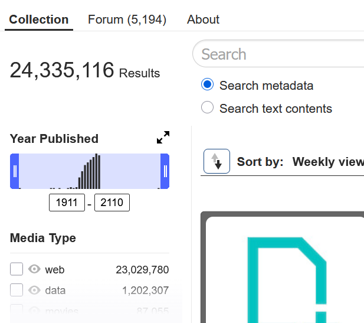
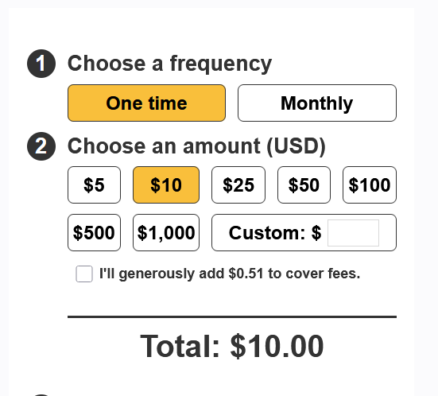
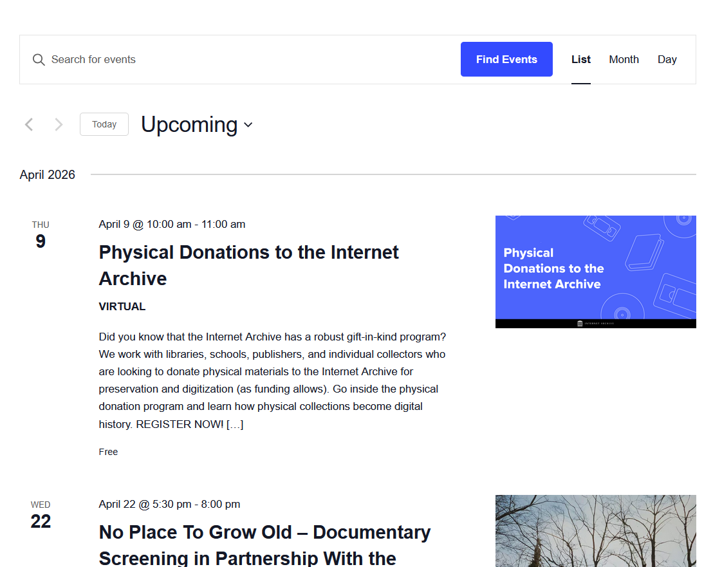

System Usability Scale:
On a scale of 1 (Completely disagree) to 5 (Completely agree), how much do you agree with each statement listed?
Time - 2:19
We asked our testers to locate the old UMW site on the Wayback Machine. They typed the web address for UMW in the Wayback Machine search bar, then navigating to an early capture. One could not, and the other had trouble with the web address. That tester recovered and completed the task.

Time - 1:11, 6:03
Their goal was to reach an emulator of Super Mario Bros, 3. Our testers browsed via the home search bar or the specific software search. They had issues with different software libraries and unplayable versions of the game.

Time - 0:05, 0:13
Their goal was to find out how many websites the archive has. We did not realize the answer could easily be found on the homepage. Our testers pointed out our mistake.

Time - 0:44, 1:16
We asked our testers to figure out if donations to the archive were tax-deductible. They originally went to the donate page, then restarted to follow a path through help to the donation FAQs. Both testers missed the final sentence on the donation page clarifying tax deductibility.

Time - 1:56, 1:14
We prompted for the Internet Archive event closest to our graduation day, May 9th. They each located the events tab after thoroughly scanning the homepage and scrolled to the event on April 22nd. Mistakes were made with the event page itself or going on a diversion with the Wayback Machine.